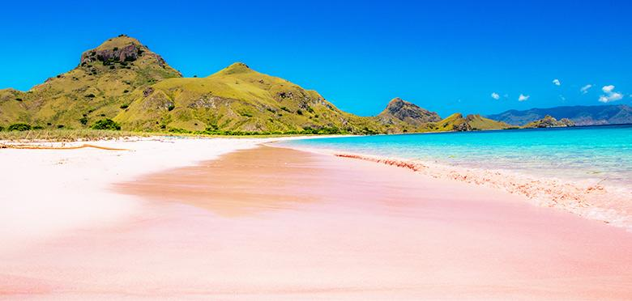
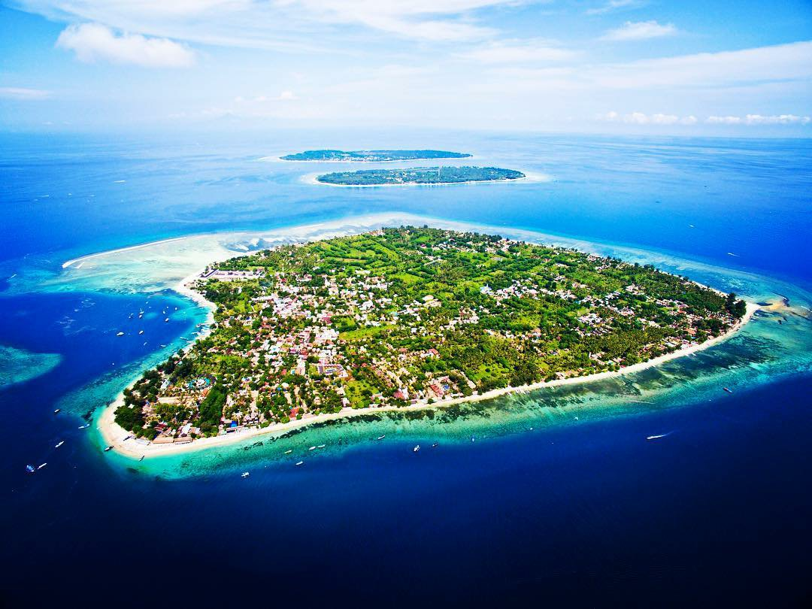

Berita Seputar Parawisata Lombok

"Obyek Wisata Alam Mulai Dibuka, TNI-Polri Siap Lakukan Pengamanan"
KabarNTB, Jakarta – Gugus Tugas Percepatan Penanganan
Covid-19 memperbolehkan kawasan obyek wisata alam yang berada di
zona hijau dan kuning dibuka untuk umum ditengah pandemi virus
corona. Kebijakan itu bagian dari dimulainya aktivitas berbasis
ekosistem dan konservasi dengan tingkat risiko virus corona paling
ringan.
"Gubernur Paparkan Prospek KEK Mandalika dalam Diskusi Online dengan
UI"
KabarNTB, Mataram – Kawasan Ekonomi Khusus (KEK) Mandalika
Lombok dipersiapkan sebagai kawasan pariwisata unggulan di Indonesia
bahkan dunia. KEK Mandalika dikelola oleh perusahaan BUMN, PT
Indonesia Tourism Development Corporation (ITDC) dan bersinergi
dengan Pemerintah Daerah untuk mempercepat pengembangan kawasan
tersebut. Gubernur NTB, Zulkieflimansyah, dalam diskusi online
“Kajian Percepatan Lima Destinasi” dengan Universitas Indonesia (UI)
di ringan.

"Mulai Dibuka untuk Wisatawan, Warga Tiga Gili Diminta Taati
Protokol Kesehatan"
Lombok Utara – Gugus Tugas Percepatan Penanganan Covid-19
memperbolehkan kawasan obyek wisata alam yang berada di zona hijau
dan kuning dibuka untuk umum ditengah pandemi virus corona.
Kebijakan itu bagian dari dimulainya aktivitas berbasis ekosistem
dan konservasi dengan tingkat risiko virus corona paling ringan.